By DF7BE.
$Id$
History
~~~~~~~
2026-04-02 DF7BE OK for Windows and Ubuntu
2026-03-29 DF7BE First issue.
This feature is under construction,
to be continued with:
LINUXMint,Raspberry Pi 4 and 5, MacOS.
The final description will be delivered
as soon as possible.
Contents
________
1. Preface
1.1 Prerequisites 2. Create basic icon file
3. Create and convert icon files
3.1 Windows
3.2 LINUX with GTK2
3.3 MacOS (Darwin) with GTK2
4. Insert icons and create shortcuts
4.1 Windows
4.2 LINUX with GTK2
4.3 MacOS (Darwin) with GTK2
1. Preface
==========
This document describe the steps to
- create icon files
- insert them into a HWGUI program
- create desktop and dock/dash (taskbar) shortcuts for
quick start of a program.
Note:
Because all of my computers are set to german system language,
the english words are guessed.
Please open a ticket to send us the correct words in english.
As an appended file you can also send us corresponding
screen shots. TNX!
1.1 Prerequisites
-----------------
Be shure, that the Installation of Harbour and
HWGUI is done and
the main sample program is running.
2. Create basic icon file
=========================
First paint a basic image file with a suitable
program (for example Windows Paint)
with size 1024x1024 as Windows bitmap (.bmp).
This is the maximum size for some operation systems.
The size and format is strictly necessary.
In several cases, the size is shrinked.
Note:
When using images, even parts thereof, from external sources,
you should respect copyright to avoid legal problems,
especially if the images are published.
For the sample program the sample file is named "hwgui_1024x1024.bmp".
For next steps the file must be converted to
PNG format with a suitable program,
on Windows "Irfanview" (Free, but not Open Source)
is a good program, also for other image operations.
3. Create and convert icon files
================================
3.1 Windows
===========
The icon file is embedded into the EXE, also possible in DLL's.
The resource compiler "winres" will do this for you at
compile time.
- First reduce icon file to 256x256 and
convert them into *.ico format
(possible also with "Paint" and "IrfanView").
Continue with 4.1
The installation of shortcuts is very easy.
3.2 LINUX with GTK2
===================
The recommended size for icons on GTK is 128x128.
3.3 MacOS (Darwin) with GTK2
============================
The maximum size on MacOS is 1024x1024.
But some more lower sized are needed
and must be collected in a container with
extension *.icns.
A simple shell script are delivered
to create all resized icon files
and collect them in a .icns file. (macosiconconv.sh)
4. Insert icons and create shortcuts
====================================
4.1 Windows
===========
Files:
- hwguiicon.prg
- hwguiicon.hbp
- hwgui_256x256.ico
- hwgui.rc
- Windows.Manifest
- Windows64.Manifest
Tested on Windows 11 with MinGW (gcc (GCC) 4.6.2).
Open a Console Window (CMD) and set the path by
pfad.bat
Compile the sample program by command:
hbmk2 hwguiicon.hbp
Go with the Explorer to the directory
where the sample program is located, now
you can see the symbol with the HWGUI icon:
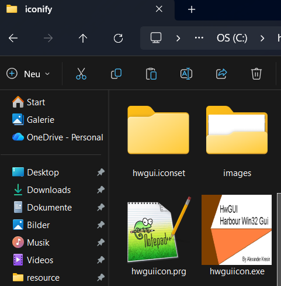
Start the program with:
hwguiicon.exe
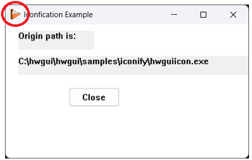
Also the icon appears on the taskbar:
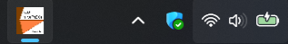
Close the sample program.
Create a shortcut on the desktop:
Go to a blank position on the desktop
and mouse rightclick:
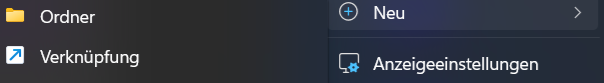
Say "New" (Neu) and "Link" (Verknüpfung),
In the first windows click "Browse..." (Durchsuchen...)
and navigate to "hwguiicon.exe".
If selected, say "Continue" (Weiter).
Enter a text for display, for example "HWGUI Icon sample".
End with "Finish" (Fertig stellen).
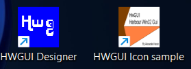
Pin the start symbol to the taskbar:
Start the program by double click on the desktop shortcut and
go to the icon on the taskbar and mouse right click:
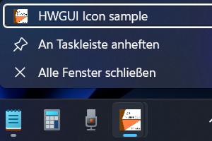
Say: "Pin at taskbar" (An Taskleiste anheften)
Now the symbol appears permantly.
Close the program and test start:
Click onto symbol and the sample program
starts again (only one click).
Ready !
4.2 LINUX with GTK2
===================
- hwguiicon.prg
- hwguiicon.hbp
- hwgui_128x128.png
- hwguiicon.desktop
Pre steps for all LINUX distributions:
-------------------------------------
- Create in the home directory a directory containing
the compiled sample program (sample running environment):
mkdir hwgui_icon
- Open a terminal and
compile the sample program by:
hbmk2 hwguiicon.hbp
- Copy the generated EXE file "hwguiicon" into
the above mentioned directory.
Also follwing file:
hwgui_128x128.png
- Start the program by:
./hwguiicon
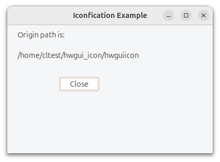
- Now the "Gear" icon appeared on the dock , if the sample
program is running.
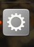
4.2.2 Ubuntu:
- Go with the mouse cursor to the icon,
the name of the WMClass is displayed:
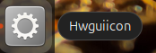
The name is the file name of the EXE file, but the first
character is in upper case: Hwguiicon
- Terminate the program.
Create a desktop shortcut:
- Now copy the file "hwguiicon.desktop"
onto the desktop.
Sample call:
cd ~/Schreibtisch
cp ~/svnwork/hwgui-code/hwgui/samples/iconify/hwguiicon.desktop .
"Schreibtisch" means "Desktop", depends on system
language setting, here german.
The icon appears on the desktop with a cross:
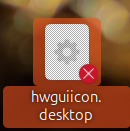
- Modify the values to your own needs:
Path=Path to location of the exefile
(cd to it before running the applcation)
Exec=Path and name to the exe file.
Icon=Path and name to the icon file.
(for this test this may be $HOME/hwgui_icon
or in samples/iconify in the svn work directory)
- Set execute permission:
chmod 755 ~/Schreibtisch/hwguiicon.desktop
- Check properties:
Right mouse click and be shure, that
the execute permission is allowed:
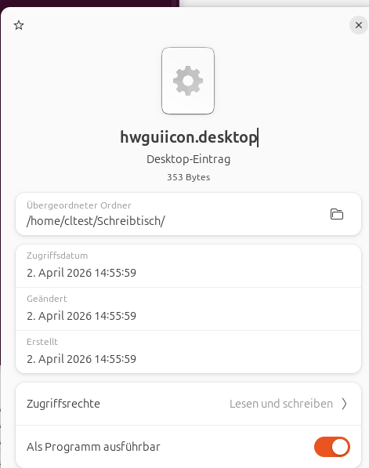
Set "Allow execute as program" (Als Programm ausführbar) to on.
- It may be that the icon of HWGUI does not appear and the cross
symbol is visible,
move the icon symbol holding down the left mouse button
to another position on the desktop.
Otherwise the settings in the desktop file
are not correct, check them again.
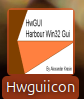
- Start the program by double click.
Continue only with the next step, if the
program is running OK.
- Copy the desktop file also to:
.local/share/applications
in the home directory.
The easyest way to copy is (because of hidden directory (start in terminal in the home dirctory:
cd .local/share/applications
cp ~/Schreibtisch/hwguiicon.desktop.
If this file does not exist, create it with
mkdir -p .local/share/applications
- If the program can be started from the desktop
shortcut and the program icon appears in the doc,
you can now pin the start icon onto the dock/dash.
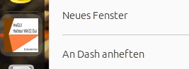
(An Dash anheften)
The action is confirmed by a system message.
- Now close the running program and try to start it
from the dock/dash (single click left mouse button.
If successfull, the installation is finished.
<under construction> for:
LINUXMint, Raspberry Pi 4 and 5
4.3 MacOS (Darwin) with GTK2
============================
<under construction>
Now have succes and fun.
73 de DF7BE,Wilfried